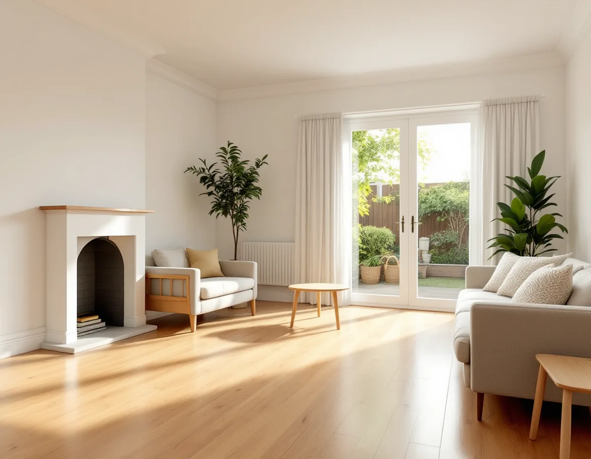
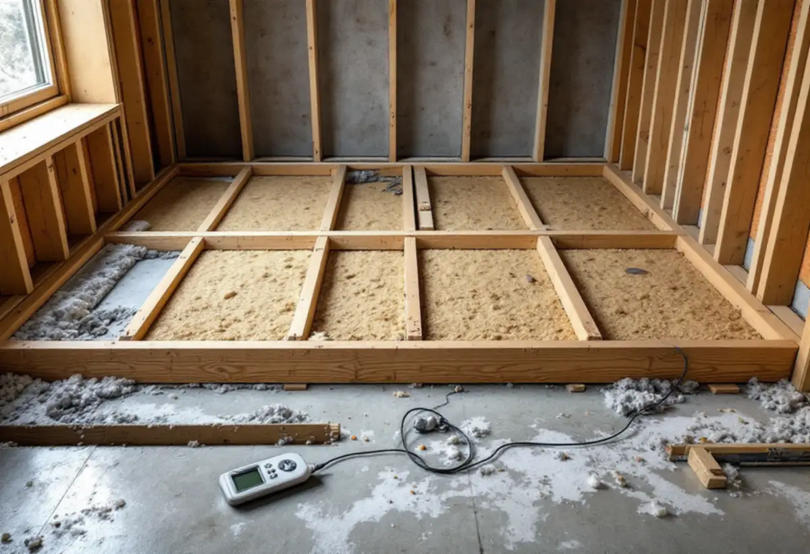
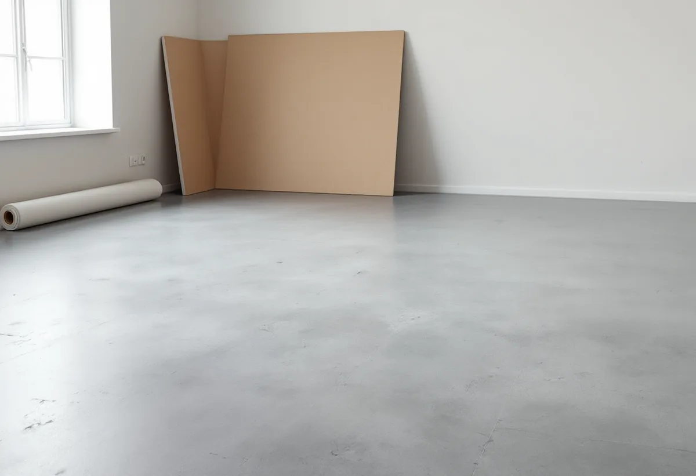

Besök
Gratis besök där vi öppnar golvet på ett dolt ställe.

Kistas radhus och lägenheter byggdes 1975–1980, och många golv har nu bytts en eller två gånger.
Beskriv jobbet kort.
Något blev fel. Kontrollera uppgifterna eller ring 08 12 410 276.
Vi tittar på jobbet på plats innan du får offert.
Du ser vad som ingår och vad det kostar.
Vi drar av ROT direkt och sköter ansökan.
Geal Entreprenad AB, Bromma. Org.nr 559303-7566.

I ett radhus på betongplatta är det som ligger under golvet viktigare än själva parketten: hur plattan är isolerad, hur fuktig den är och om golvet är uppreglat. Vi tar reda på det innan vi lägger nytt.
Staden köpte marken på Järvafältet 1966, och Kista byggdes ut under åren 1975–1980 med 2 500 lägenheter i flerbostadshus och omkring 780 småhus. Stadens statistik för 2024 visar 971 småhus i Kista, varav 482 med äganderätt och 404 bostadsrätter.
Golven i husen är alltså snart 50 år gamla, och i många har de bytts under åren. Vid ett nytt golvbyte vet man därför sällan vad som ligger under det golv man ser – och det är där vi börjar.

Boverket beskriver hur betongplattor på mark har byggts olika genom åren. När plattor på mark infördes i bostäder i början av 1960-talet byggdes de främst med isolering ovanpå och ofta utan ångtätt skikt mot marken. Golven var vanligtvis uppreglade med isolering mellan reglarna.
Med isoleringen ovanpå blir betongen nästan lika kall som marken under, och då blir fuktigheten i betongen hög. Boverket skriver att träreglar och smuts på betongytan då kan bli fuktiga och ge mikrobiell påväxt och lukt. Därför tar vi reda på hur just ditt golv är byggt innan vi föreslår något.
Vi börjar med att lyfta en tröskel eller öppna golvet på ett ställe där det inte syns. Då ser vi om golvet är uppreglat, vad som ligger mellan reglarna och om det luktar. Finns ritningar från byggtiden tittar vi på dem också.
Luktar det unket eller är reglarna fuktiga ska orsaken åtgärdas innan ett nytt golv läggs. Annars flyttar problemet bara upp i det nya golvet. Är konstruktionen torr och frisk kan ett nytt golv läggas direkt på det befintliga underlaget.
Ska golvet läggas direkt på betong behöver ytan ofta jämnas av. Golvbranschen skiljer mellan normaltorkande och självtorkande avjämning. Den normaltorkande måste torka till den fukthalt som lim och golv kräver innan golvet läggs.
Golvbranschen rekommenderar att betongens fukthalt kontrolleras innan avjämningen läggs, så att den inte är högre än vad golvet tål. Trägolv är särskilt känsliga eftersom trä tar upp fukt och sväller.
Lamellparkett består enligt Golvbranschen av två eller flera skikt där det översta är massivt trä, minst 2,5 millimeter tjockt. Skikten är limmade korsvis för att minska golvets fuktrörelser, och parketten läggs normalt flytande.
I ett radhus med betongplatta läggs flytande parkett på en underlagsmatta med fuktspärr när underlaget är friskt. I hall och kök väljer vi gärna ett golv som tål vatten och grus bättre. Läs mer om golvläggning.
I hallen och köket möter golvet vatten, grus och snö. Där passar ett golv som tål fukt och slitage bättre än parkett, till exempel klinker eller ett slitstarkt plastgolv. Övergången till parketten görs med en tröskel eller list som inte blir en snubbelkant.
Har radhuset två plan behöver trappan ofta göras om när golven byts. Vi mäter stegen och föreslår om de ska kläs med samma material som golvet eller renoveras för sig. Det gör att huset får ett sammanhållet uttryck från hall till övervåning.
Gratis besök där vi öppnar golvet på ett dolt ställe.
Vi ser om golvet är uppreglat och om det finns fukt eller lukt.
Skriftligt kostnadsförslag med underlag och golvval.
Det gamla golvet tas bort och sorteras.
Fuktmätning, avjämning eller nytt underlag.
Nytt golv, trösklar och lister.
Äger du ett småhus ger arbetet rotavdrag när du bor i huset eller har det som fritidshus. Avdraget är 30 procent av arbetskostnaden, högst 50 000 kronor per person och år och högst 75 000 kronor tillsammans med rutavdrag, enligt Skatteverket. Material och resor ger inget avdrag. Geal drar avdraget direkt på fakturan.
Bor du i en bostadsrätt ger golvbyte inne i lägenheten rotavdrag för det som du ansvarar för enligt stadgarna.
Golvytan, vad som ligger under, om fukt eller lukt måste åtgärdas, hur mycket avjämning som behövs och vilket golv du väljer. Efter besöket får du ett skriftligt kostnadsförslag.
Parkett, trägolv, klinker och slipning.
Golvläggning i Stockholm →Takbyte, takbesiktning och plåtarbeten.
Takläggare i Kista →Låga tak, tätskikt och takbrunnar från 1970-talet.
Takrenovering i Kista →Gårdshus vid radhus och villor.
Attefallshus i Kista →Radhusen, föreningen och ventilationen.
Badrumsrenovering i Kista →Uterum, altan och föreningens tillstånd.
Byggföretag i Kista →Radhus, atriumhus och husgruppen.
Fasadmålning i Kista →Panel, skivor och isolering på radhus.
Fasadrenovering i Kista →Radhus och villor från 1970-talet.
Fönsterbyte i Kista →1970-talets radhusfönster.
Fönsterrenovering i Kista →Golvslipning i bostadsrätt, hyresrätt och radhus.
Golvslipning i Kista →Småhus i förening och kök från 1970-talet.
Köksrenovering i Kista →1970-talets hus, asbest och ROT.
Målare i Kista →Rännor, stuprör och beslag.
Plåtslagare i Kista →Garderober, väggar och dörrar i lägenheten.
Snickare i Kista →Platta tak och pulpettak.
Takbyte i Kista →Lägenheter och radhus från 1970-talet.
Tapetsering i Kista →Tillbyggnad vid radhus och villor.
Tillbyggnad i Kista →Renovera hela huset eller lägenheten.
Totalrenovering i Kista →Eller ring 08 12 410 276, mån–fre 08–17.
Beskriv jobbet kort.
Något blev fel. Kontrollera uppgifterna eller ring 08 12 410 276.